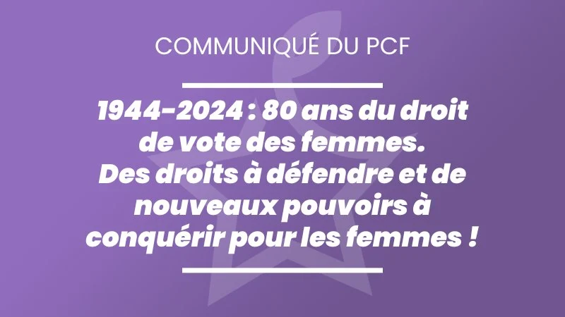
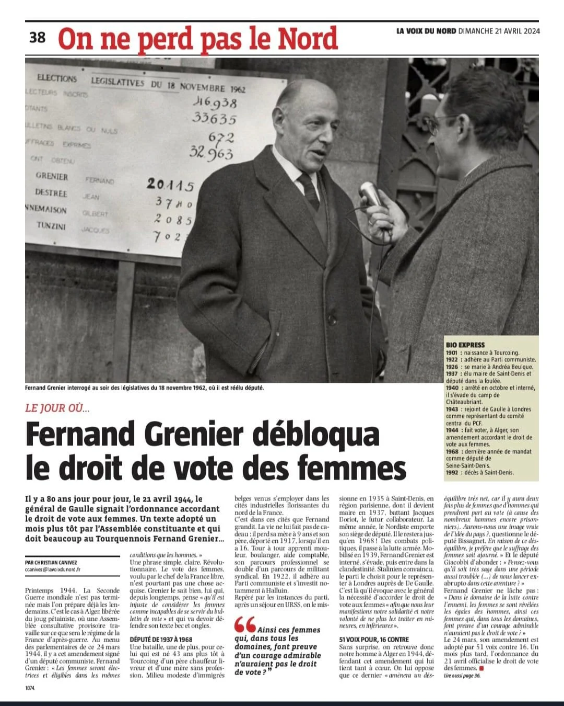

Publication d’archives
1944-2024 : 80 ans du droit de vote des femmes
Date indiquée par Facebook · 21 avril 2024
Texte conservé avec la publication
1944-2024 : 80 ans du droit de vote des femmes
« La femme a le droit de monter sur l’échafaud, elle doit avoir également celui de monter à la tribune. » Déclaration des droits de la femme et de la citoyenne, Olympe de Gouges (1791)
Le 21 avril 1944, l’amendement du député communiste Fernand Grenier modifie l’Ordonnance portant organisation des pouvoirs publics du Comité français de libération nationale pour que les femmes soient électrices et éligibles dans les mêmes conditions que les hommes.
Les femmes obtiennent progressivement le droit de vote dans la majorité des pays autour des XIXe et XXe siècles.
En 1925, alors que les députés se sont prononcés favorablement pour le droit de vote des femmes mais pas encore les sénateurs, le PCF est le seul parti à présenter des candidates aux élections municipales : à Douarnenez, l’ouvrière Joséphine Pencalet qui a pris part à la grève des sardinières pour leurs conditions de travail et leurs salaires (une grève victorieuse dont nous fêterons cette année le centenaire), est élue. Mais son élection est annulée suite à l’opposition des sénateurs.
C’est seulement en 1944, quand la France se libère de l’occupation nazie et de la collaboration, que les femmes deviennent électrices et éligibles. En mars, l’Assemblée constituante provisoire, installée à Alger, leur accorde d’abord le droit de vote. Puis le 21 avril 1944, l’amendement du député communiste Fernand Grenier modifie l’Ordonnance portant organisation des pouvoirs publics du Comité français de libération nationale pour qu’elles soient électrices et éligibles dans les mêmes conditions que les hommes. Ce droit de vote et d’éligibilité est enfin confirmé par le Gouvernement provisoire de la République française le 5 octobre de la même année et mis en pratique en avril 1945 lors des élections municipales.
Tout est à reconstruire et les communistes prennent une part active dans l’édification de la société de l’après-guerre (Sécurité sociale, droits nouveaux pour les travailleuses et les travailleurs dans les entreprises…). Comment dès lors ne pas reconnaître, enfin, ce droit civique aux femmes, dont l’action dans la résistance ne fut pas de moindre importance que celle des hommes ?
Depuis, de nombreuses lois (14 !) ont consacré la parité en politique mais la progression vers plus d’égalité n’est ni linéaire ni irrésistible : les freins sont nombreux, aujourd’hui encore. Les inégalités, justifiées par des différences biologiques, qui assignent les femmes à la maternité et aux métiers du soin et du lien les maintiennent dans un état de minorité permanent. La sphère publique ne peut pas échapper aux inégalités observées dans le monde du travail où elles sont le résultat de la logique capitaliste : la division du monde du travail permet de mieux capter les richesses qu’il produit, le genre servant à justifier des salaires en moyenne inférieurs.
80 ans après, il est donc impossible de dire que l’égalité femmes-hommes est pleinement réalisée.
Les chiffres montrent au contraire que les femmes sont loin de représenter la moitié du corps politique ni, au sein de celui-ci, la moitié des plus hautes fonctions : 37 % de députées (un chiffre en recul pour la première fois depuis 1988), 36 % de sénatrices, 45 % de conseillères municipales mais à peine 17 % de maires et le plus souvent de petites communes (25 femmes maires seulement dans les 100 plus grandes villes de France), et 20 % de présidentes de conseils départementaux. Derrière la parité quantitative se joue aussi la parité de responsabilité. Or les femmes occupent des fonctions moins élevées que les hommes.
Alors que c’est encore très majoritairement sur les femmes, à plus de 85 %, que reposent les tâches domestiques et la charge de la famille et de la parentalité, qu’elles subissent de façon ultra majoritaires des temps partiels et donc des salaires partiels, il leur est difficile, voire matériellement impossible, d’imaginer se projeter dans un engagement civique et politique. Pour permettre aux femmes de disposer de leur temps et ainsi être en capacité de participer pleinement à la vie publique et politique, il faut s’attaquer à réformer structurellement le monde du travail, augmenter les salaires des métiers à prédominance féminine, légiférer pour indexer les salaires sur l’inflation, diminuer le temps de travail de toutes et tous pour travailler mieux et atteindre le plein emploi. Et en amont, dispenser des enseignements non-sexistes à l’école afin que les petites filles et les petits garçons ne soient plus enfermé·es dans des stéréotypes de genre qui formatent leurs choix scolaires.
De telles avancées sociales bénéficieraient à toutes et tous : les conquis féministes ont en effet un impact sur le progrès social en général. Que les femmes occupent plus de place en politique, pèsent dans les décisions et le débat public, ne doit pas être considéré comme une défaite pour les hommes : ce sont des défaites pour le patriarcat.
L’égalité est notre affaire à toutes et tous, femmes et hommes.
Cet anniversaire doit être l’occasion de faire le bilan des progrès et des reculs documentés, notamment par les rapport annuels du Haut Conseil à l’Égalité.
Il doit aussi être l’occasion de célébrer les conquêtes sociales du mouvement ouvrier et de ses élu·es mais surtout, au regard des reculs et des menaces qui pèsent sur les droits humains, d’exprimer le besoin d’en conquérir de nouveaux partout dans la société, particulièrement dans la sphère structurante du travail.
PCF - Parti Communiste Français
#egalitehommefemme
#droitsdesfemmes


Sources
Archive rouge · export Facebook · AR-0002-FB-01418
À lire aussi · Mazan : Un procès historique qui montre le chemin qu’il reste à parcourir - Communiqué du PCF - Parti…